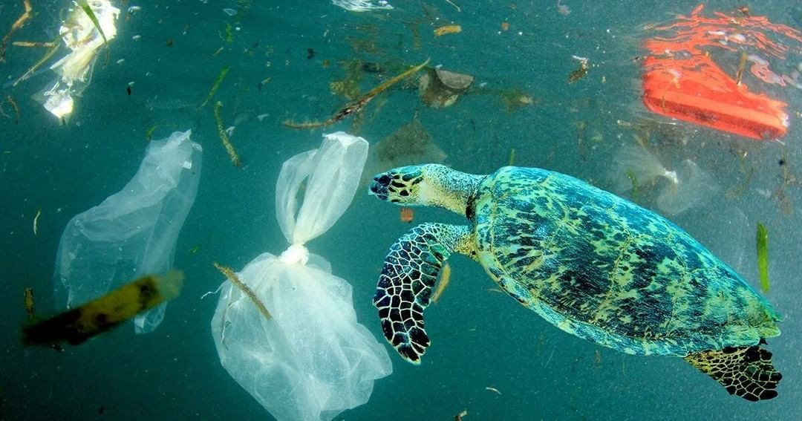
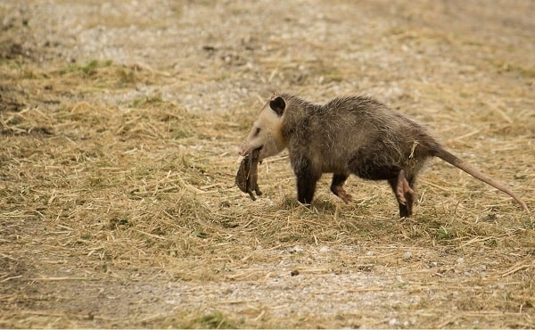
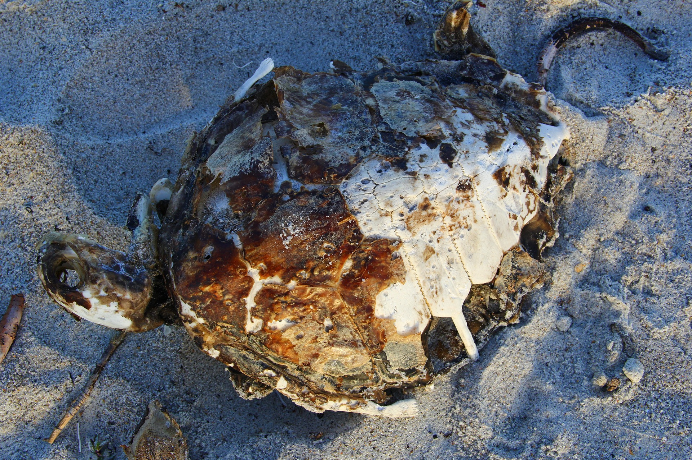

The peaceful creatures that live in our waters, turtles, are threatened on several fronts, putting their very survival in danger. Poaching, pollution, and habitat deterioration are among of their main problems. In addition to posing serious health risks, human activities like fishing and coastal expansion impair nesting areas and feeding grounds for wildlife. Pollution from plastics and chemicals also endangers their well-being. Additionally, turtle populations are being further depleted due to illegal commerce in their flesh, eggs, and shells. These dangers put great strain on the ability of these amazing creatures to survive. Join us as we discuss the critical need for conservation and look into ways to save turtles from these dangerous dangers.
POLLUTION

Pollution is the major issue for turtles. It takes several forms, including toxins from oil spills, heavy metals, and pesticides. Turtles are also subjected to plastic pollution when they consume plastic bags and other rubbish, which can cause them to become ill or clog their stomachs. Farming chemicals may pollute waterways and threaten turtle habitats. it can make them ill, impair their fertility, and damage their immune systems. Eating plastic may harm their internal organs, make them feeble, and possibly kill them. Turtles can sometimes become entangled in fishing lines and drown. Pollution has the potential to propagate illnesses that threaten turtle populations.
We must take steps to limit pollution and safeguard turtles. We can impose stronger regulations to avoid chemical contamination and ensure appropriate waste disposal. Using natural degradable materials and recycling can help prevent plastic pollution. Farmers should use less toxic pesticides, and fishermen can utilize non-destructive fishing practices. It is also critical to educate and raise awareness about pollution.
PREDATION AND NEST PREDATION

Turtles have predators that eat them and their eggs. These predators include raccoons, foxes, birds, and even ants. They have different ways of finding and eating turtle eggs. Some find the nests and eat the eggs, while others catch the baby turtles as they come out of the nest.
Predators and Nest predators Predators and Nest predators are a big problem for turtles. When predators eat the eggs, fewer baby turtles survive and grow up. Sometimes, all the eggs in a nest can be destroyed. This means there are fewer turtles, and their populations can go down a lot. This is especially bad when other problems like pollution and habitat destruction are also happening. To help turtles, we can take steps to protect them from predators. We can move turtle nests to safer places or use barriers to keep predators away. It's important to involve communities and teach them about protecting nests and reporting predators. We can also restore habitats and make sure there are good places for turtles to lay their eggs where predators can't get to them.
HABITAT FRAGEMENTATION & LOSS OF CONNECTIVITY

Habitat fragmentation happens because of things people do. When land is used for building cities or roads, turtle habitats get broken up into smaller pieces. This makes it hard for turtles to move around. Farming can also destroy their habitats and food sources.
When habitats are broken up, turtles have trouble finding the things they need, like places to lay eggs or food to eat. They also can't move between habitats easily, which is important for their survival. When turtle populations get cut off from each other, it can lead to problems like inbreeding and weaker turtles. Fragmented habitats also have more dangers, like more predators and invasive species.
To help turtles, we need to protect their habitats and find ways to connect them. We can create protected areas and make rules to limit development. Restoring habitats and creating corridors or paths between them can help turtles move around safely. It's important for communities, landowners, and organizations to work together to protect turtle habitats and keep them connected.
"The Sea Turtle Conservancy (STC) is one of the oldest and most accomplished sea turtle organizations globally. Their mission is to ensure the survival of sea turtles through research, education, advocacy, and protection of their habitats. On their website, you can find information about their ongoing projects, ways to get involved, and resources for understanding and supporting sea turtle conservation efforts."
visit:https://conserveturtles.org/